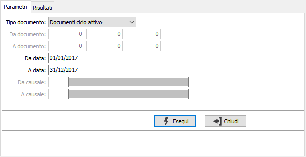
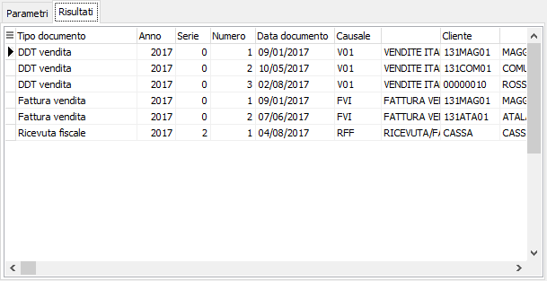

Eliminazione documenti di vendita/acquisto
La procedura consente l'eliminazione di gruppi di documenti; è possibile eliminare documenti della stessa tipologia, ad esempio i documenti del ciclo attivo, oppure di un'unica tipologia, ad esempio le fatture di vendita, oppure tutti i documenti. I parametri di selezione si attivano in base al tipo documento scelto; per i gruppi sono attive solo le date documento. L'inserimento dei limiti di data documento è obbligatorio e non è consentito selezionare periodi superiori ad un anno solare (01/01 - 31/12).
La finestra si compone di due sezioni, la prima consente l'inserimento dei parametri di selezione, la seconda permette la visualizzazione i riferimenti ai documenti selezionati che saranno eliminati e permette di annullare l'operazione oppure confermarla.

TIPO DOCUMENTO: è possibile selezionare singoli gruppi di documenti: fatture e Ddt di vendita e di acquisto, ricevute fiscali o autofatture; è possibile anche selezionare gruppi omogenei come documenti del ciclo attivo o del ciclo passivo oppure tutti i documenti.
RIFERIMENTO DOCUMENTI: i campi sono attivi solo se è stato selezionato il tipo di documento e consentono di specificare anno, serie e numero di inizio e fine elaborazione.
DA DATA DOCUMENTO: campo obbligatorio, indica la data documento con cui iniziare l'elaborazione. Le date devono appartenere allo stesso anno.
A DATA DOCUMENTO: campo obbligatorio, indica la data documento con cui terminare l'elaborazione. Le date devono appartenere allo stesso anno.
CAUSALI: i campi sono attivi solo se è stato selezionato il tipo di documento e consentono di specificare la causale di inizio e fine elaborazione.
Premendo il pulsante Esegui si dà inizio all'elaborazione che porta alla seconda sezione 'Risultati' da cui effettuare la cancellazione definitiva dopo aver controllato che i documenti selezionati siano quelli che si vogliono eliminare. Al termine delle operazioni premendo il tasto F10 oppure il bottone Salva sulla tool saranno eliminati i dati relativi ai documenti visualizzati.
